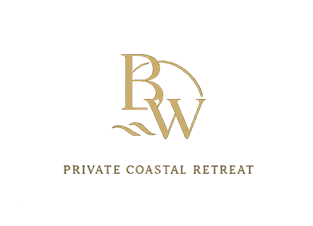

海岸气质
这个网页并不试图构造一段具体年代的传奇背景，而是把“临海”所带来的 开阔、宁静与慢节奏，转化成更稳定的视觉基调。海面、水平线和空气感， 共同定义了首页和内页的呼吸节奏。

B&W


文化线索
这个网页并不试图构造一段具体年代的传奇背景，而是把“临海”所带来的 开阔、宁静与慢节奏，转化成更稳定的视觉基调。海面、水平线和空气感， 共同定义了首页和内页的呼吸节奏。
从建筑外观到室内材质，页面中的每一张图都在服务同一个目标： 让浏览者感受到克制、安静、隐奢而不喧哗的酒店气质。空间不是被堆砌， 而是通过光线、尺度和留白被缓慢组织出来。
顶部轮播承担的是第一视觉冲击，下面的文字则负责把这种气质解释清楚。 这样处理之后，页面既有展示感，也有课程作品所需要的表达层次， 不会停留在单纯的图像堆叠上。
作为前端期末作业，这一页更适合被理解为“设计概念说明页”。 它通过轮播、排版和文字说明共同回答一个问题： 这个网站为什么长成现在这个样子，以及它想传达什么样的品牌体验。